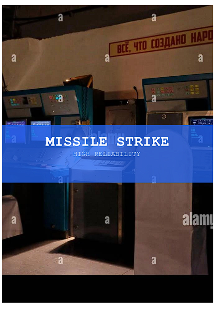

CHAPTER 2 · AI 시대의 루프
1983년 — 두 번의 경보
1983. 9. 1
대한항공 007편 격추, 269명 사망
소련 방공 시스템은 민항기를 미군 정찰기로 판정했고, 그 판정은 지휘 계통을 그대로 통과해 미사일 발사로 이어졌다.
(TIME, 1983. 9. 12)
25일

MISSILE STRIKEHIGH RELIABILITY
1983. 9. 26
세르푸호프-15 벙커, 페트로프의 콘솔 “MISSILE STRIKE”
조기경보 시스템이 ICBM 발사를 ‘최고 신뢰도’로 보고 — 1발, 이어서 5발. 당직 장교 페트로프는 누구도 단 5발로 전쟁을 시작하지 않는다고 판단했다.
시스템의 판정이 그대로 통과된 날, 269명이 죽었다— 인간이 시스템을 의심한 밤, 세계가 살았다
1983. 9. 1 — 대한항공 007편 격추, 269명 사망 (TIME, 1983. 9. 12) · 1983. 9. 26 — 세르푸호프-15 벙커, 페트로프의 콘솔 “MISSILE STRIKE”